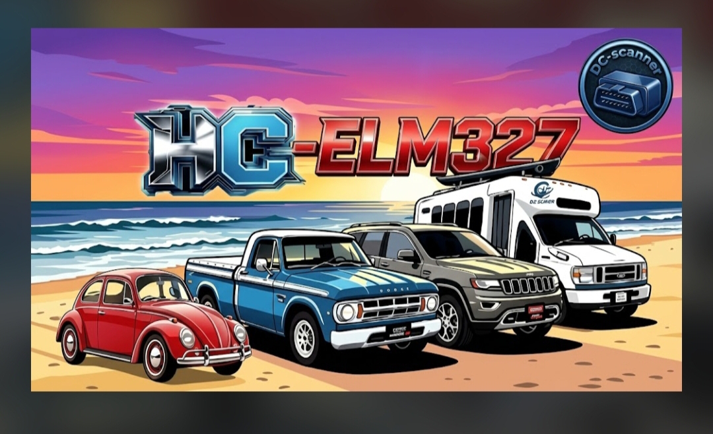
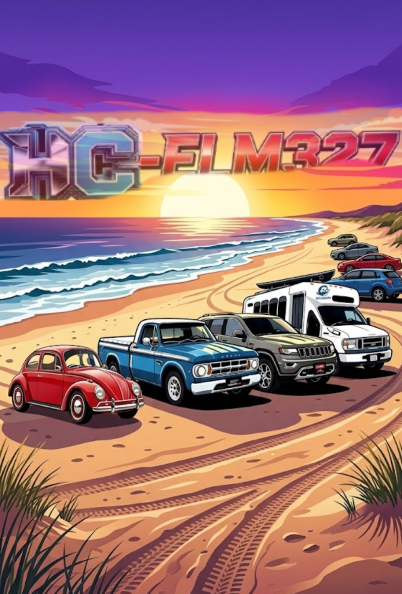
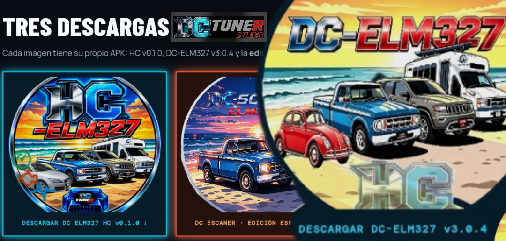

Escaneo SPP y BLE
Busca adaptadores emparejados y visibles, muestra nombre y dirección, e identifica el modo de conexión. El proyecto documenta PIN manual, por ejemplo 0000 o 1234 cuando el adaptador lo solicita.
DC LABORATORY · EDICIÓN HC · OBD-II
DC-ELM327 HC es una edición Android orientada a la comunicación con adaptadores ELM327 por Bluetooth clásico SPP y BLE. Busca adaptadores cercanos o emparejados, verifica el protocolo de comunicación y ofrece herramientas para revisar sensores, códigos de falla y datos del vehículo. Su enfoque de conexión reforzada combina el escaneo, la reconexión automática y una cola de comunicación para ordenar las consultas del diagnóstico.
El botón pulsa suavemente para destacarse. Si tu dispositivo tiene activada la opción de reducir movimiento, la animación se desactiva.
CONEXIÓN, SENSORES Y CÓDIGOS
La ficha se basa en el README y las notas de la release del repositorio. La disponibilidad de sensores, códigos y datos de ECU cambia según el vehículo, el adaptador, el protocolo y la versión de Android.
Busca adaptadores emparejados y visibles, muestra nombre y dirección, e identifica el modo de conexión. El proyecto documenta PIN manual, por ejemplo 0000 o 1234 cuando el adaptador lo solicita.
Incluye reintentos y reconexión automática ante cortes. Una cola serial coordina las consultas de sensores, el terminal AT y el diagnóstico para evitar choques entre solicitudes.
El flujo documentado comprueba comandos de inicialización como ATZ y ATE0, e intenta confirmar el protocolo OBD-II antes de enviar consultas a la ECU.
Consulta RPM, velocidad, temperatura, carga, acelerador, MAF y otros PIDs estándar que el adaptador y el vehículo pongan a disposición.
La documentación enumera códigos almacenados, pendientes y permanentes, datos freeze-frame, VIN/ECU cuando están disponibles y estado de monitores.
También describe temperatura de aceite y ambiente, presiones de combustible y barométrica, avance de encendido, EGR/EVAP, voltaje, tiempo de marcha y distancia desde MIL.
La terminal permite observar y probar la comunicación con el adaptador, con el flujo de diagnóstico y las consultas seriales coordinadas por la app.
La release menciona un reporte PDF con lecturas y códigos, acompañado por un sello digital de sesión para conservar el resultado del diagnóstico.
El proyecto describe referencias SAE J2012 y algunas OEM con búsqueda y selector de vehículo. Incluye síntomas, causas posibles y pruebas sugeridas como guía de consulta.
!Las descripciones de códigos son orientación. Las causas y procedimientos dependen del vehículo y de su manual de servicio exacto. Un código borrado no equivale a una reparación y el escaneo no garantiza alcance fuera del rango de radio del adaptador.
IMÁGENES DE DRIVE
Se muestran las tres imágenes de Drive en el orden solicitado. La foto que compartiste se usa aparte como fondo tenue para mantener legibles el texto y los botones.



APK DE REVISIÓN · V0.1.0
La APK de la release se publica como archivo de revisión de Android. El repositorio ofrece también un archivo de sumas SHA-256 para comprobar que la copia descargada corresponde al asset publicado.
La suma aparece en el archivo SHA256SUMS.txt asociado a la release v0.1.0.
!Instala solo si aceptas que es una compilación de prueba. La APK de revisión usa clave debug y no es una versión de producción. Habilita la instalación de esta fuente solo si decides instalarla, concede permisos según Android y valida la conexión en un vehículo de prueba con un adaptador real.